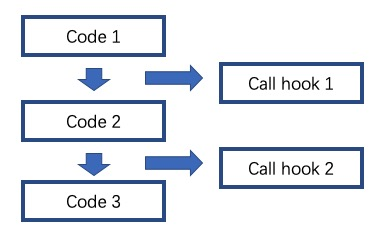

Wrapper & Hook Overview¶
Wrapper¶
- Overview:
Wrapper, the decorator. Generally speaking, if we want to perform some custom operations when a certain function is executed, Wrapper can come in handy. Use Wrapper to wrap the function, you can conveniently operate the input and output of the function, or calculate some state related to the function. For model operations, such as
.cuda()or train/eval mode switching and whether to share the model itself in different modes, it is left to the user to directly adjust the model in the policy.- Usage:
There are three places where wrapper is used in DI-engine: env, model, and learner.
env
The wrapper used in env is actually a subclass of
gym.Wrapper. In order to conveniently do some operations or adaptations to the input and output of the environment, Wrapper is a very convenient and effective tool. It can be simply understood that this part of the Wrapper is a wrapper for the environment class. Only some commonly used wrappers in gym are encapsulated in env_wrapper.Usage:
env = gym.make('PongNoFrameskip-v4') env = NoopResetEnv(env)
Define your owned env wrapper. Please complete the following steps to implement customed
MyWrapper(the same as usinggym.Wrapper):MyWrapperinheritsgym.Wrapper, and implementsstep(),reset()and other functions according to requirements.Use
env = MyWrapper(env)to get a new wrapped environment.
model
For the model used in the policy, we also implemented a encapsulation similar to
gym.Wrapperto achieve faster and more convenient changes to themodelclass.Usage:
The defined wrappers are placed under
ding.model.model_wrappers.pyfor easy viewing. For the usage of wrapper, a new model can be obtained according to the following rules:model = model_wrap(model, wrapper_name='your_wrapper_name', **kwargs)
- wrapper can be any wrapper that needs to be used.
Refer to the next section for custom wrapper usage.
wrapper_nameis the name of any wrapper that has been registered. If it is a custom wrapper, you need to provide a name when registering.kwargsis the parameters required by the wrapper.In this case, the resulting
modelcan be used like the original model. For example, when callingmodel.forward, theforwardfunction defined in the wrapper will be called first. If it is not defined, it will continue to look for it in the wrapper of the next layer.
Define your own model wrapper:
For user-defined
MyWrapper, the following steps need to be completed:Inherit from
ding.model.model_wrappers.IModelWrapper, which is the base class of the wrapper used by the model.In
MyWrapper, implement the required forward and other functions according to requirements.Add
MyWrapperto themodel_wrappers.wrapper_name_mapdictionary through theregister_wrapper()method. In this way, you can easily add wrapper operations to the model throughadd_wrapper.
Calling process:


Currently supported wrappers:
Accessible Model Wrapper in DI-engine¶ Wrapper Name
Wrapper Class Name
Wrapper Usage
base
BaseModelWrapper
The most basic wrapper, providing a simple reset method
hidden_state
HiddenStateWrapper
Control the behavior of the hidden state during
forward, maintain the corresponding hidden state according to the number of training batch samples within the instance, and enter the output hidden of the previous iteration before eachforward, and save the hidden state of the output afterforwardto prepare for the next timeargmax_sample
ArgmaxSampleWrapper
For logit input, find the index where the maximum value is located as an action. Used for discrete actions
eps_greedy_sample
EpsGreedySampleWrapper
For q value input, use Epsilon greedy strategy to sample actions. Used for discrete actions
multinomial_sample
MultinomialSampleWrapper
For logit input, sample actions based on probability. Used for discrete actions
action_noise
ActionNoiseWrapper
Add noise of the specified type (such as Gauss, OU) to the action. Used for continuous action
target
TargetNetworkWrapper
Used to implement target network
teacher
TeacherNetworkWrapper
Used to implement teacher network
View Wrapper nesting situation
Call the outermost model.info() method to see the nesting status of all wrappers added by the current model.
model = MLP() model = model_wrap(model, wrapper_name='multinomial_sample') model = model_wrap(model, wrapper_name='argmax_sample') print(model.info('forward')) # 查看forward方法在model中的调用情况 # MultinomialSampleWrapper ArgmaxSampleWrapper MLP 依次打印出forward方法调用情况
learner
There are relatively few places where wrapper is used in the model, which is mainly manifested as the
time wrapperrelated to timing.
Hook¶
Overview:
Hook can automatically call the function defined in the hook when the external function is called. In the program, for a well-encapsulated code, if it needs to be modified, it may take considerable effort. The Hook function was created from this. The code author can expose the hook at any position in a piece of code, and the user can implement the functions they need in the hook, so that when the code runs to the specified position, the hook will be triggered and the functions defined in the hook will be Automatic call, so as to realize the function of quickly modifying the code.
Usage:
The hook used in DI-engine is mainly in learner.
learner
In DI-engine, the training part of the learner can be simplified as follows:
# before_run for i in range(max_iter): # before_iter self._policy.forward(data) # after_iter # after_runAs can be seen from the code, the hook used in the learner defines four positions, namely
before_run: before the start of the training task
after_run: After the training task is completed
before_iter: before each iter of the training task
after_iter: after each iter of the training task
When the program runs to the specified location, all functions on the hook registered at this location will be called.
Usage:
DI-engine has implemented many commonly used hooks and provides simple calling methods. The hook can be called through cfg. The configuration and use of cfg are as follows:
# hook: # load_ckpt: # name: load_ckpt # hook的名称 # position: before_run # hook所处的位置 # priority: 20 # hook的优先级，如果同一位置被注册了多个hook，则会根据优先级大小来顺序执行 # type: load_ckpt # hook的类型 # log_show: # ext_args: # freq: 100 # 提供了参数freq来控制hook被执行的频率 # name: log_show # position: after_iter # priority: 20 # type:log_show # save_ckpt_after_iter: # ext_args: # freq: 100 # name: save_ckpt_after_iter # position: after_iter # priority: 20 # type: save_ckpt # save_ckpt_after_run: # name: save_ckpt_after_run # position: after_run # priority: 20 # type: save_ckpt hooks = build_learner_hook_by_cfg(cfg)So far, DI-engine will automatically register hooks according to the content of cfg when initializing learner to ensure that related functions can be performed normally.
Define your own hook: For custom
MyHook, you need to complete the following steps:
Inherit
ding.worker.learner.learner_hook.LearnerHook. This class is the base class of all hooks used in learner.Implement the
__call__method inMyHook. The input of the__call__method is an instance of learner. Through this instance, hook can operate on any variable in learner.Call
register_learner_hook()to register the customMyHook, you need to provide the hook name.Now you can use the customized
MyHookin cfg.
Calling process:
Currently supported hooks:
Accessible Hook in DI-engine¶ Hook Name
Hook Class Name
Hook Usage
load_ckpt
LoadCkptHook
Load the model from checkpoint
save_ckpt
SaveCkptHook
Save model to checkpoint
log_show
LogShowHook
Print log
log_reduce
LogReduceHook
Processing log
Simplified calling hook:
Due to the complex parameters of the hook mentioned earlier, which is not conducive for beginners to get started, DI-engine provides a simpler calling method:
Simplified Hook in DI-engine¶ Hook Name
Params
Hook Usage
log_show_after_iter
freq
Print log after a certain number of iters according to the
freqgiven by the parameterload_ckpt_before_run
None
Read the checkpoint before the training program runs
save_ckpt_after_iter
freq
Save the model after a certain number of iters according to the
freqgiven by the parametersave_ckpt_after_run
None
Save the model after the training program has run completely
The calling method is also simpler, and the required hooks can be obtained by the following code:
hook_cfg = dict( save_ckpt_after_iter=20, # A hook named save_ckpt is added to the after_iter position, ckpt will be saved every 20 iters save_ckpt_after_run=True, # A hook named save_ckpt is added at the after_run position, and ckpt will be saved once when the training is completed ) hooks = build_learner_hook_by_cfg(hook_cfg)View status of the calling of hooks:
DI-engine provides the
show_hooks()method in order to view the status of the calling of hooks at various locations, as follows:from ding.worker.learner.learner_hook import show_hooks from ding.worker.learner import build_learner_hook_by_cfg cfg = dict(save_ckpt_after_iter=20, save_ckpt_after_run=True) hooks = build_learner_hook_by_cfg(cfg) show_hooks(hooks) # before_run: [] # after_run: ['SaveCkptHook'] # before_iter: [] # after_iter: ['SaveCkptHook']
Note
What is the difference between Wrapper and Hook?
Wrapper is an encapsulation of the original method and supports layer-by-layer reuse. If the corresponding method is not found in the current layer, it will be searched on a higher layer.
Hook is to insert a new method in a certain position on the basis of the original method.